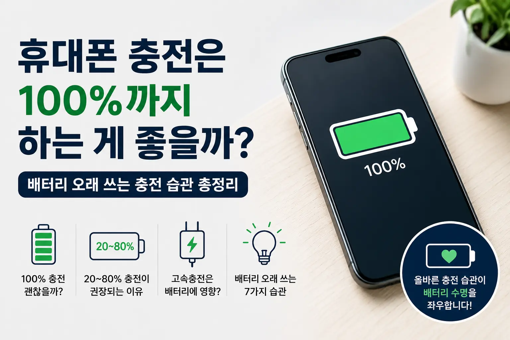

예전 휴대폰에 사용되던 니켈 계열 배터리는 완전 방전 후 충전하는 것이 좋다는 이야기가 많았습니다. 하지만 현재 대부분의 스마트폰은 리튬이온 배터리를 사용합니다. 리튬이온 배터리는 작동 방식이 완전히 다르기 때문에 과거의 충전 습관을 그대로 적용할 필요가 없습니다.
결론부터 말하면 '가끔 100% 충전하는 것'은 문제가 아닙니다. 다만 매일 장시간 100% 상태를 유지하면 배터리 내부의 화학적 스트레스가 증가하여 장기적인 수명에는 불리할 수 있습니다. 그래서 제조사들도 가능한 경우 충전을 늦추거나 80%에서 제한하는 기능을 제공하고 있습니다.
배터리는 충전량이 0% 또는 100%에 가까울수록 부담을 받습니다. 따라서 매일 사용하는 스마트폰이라면 20~80% 구간에서 자주 충전하는 것이 가장 이상적인 사용 방법으로 알려져 있습니다.
| 충전 상태 | 권장 여부 | 이유 |
|---|---|---|
| 0~10% | △ | 완전 방전은 자주 반복하지 않는 것이 좋음 |
| 20~80% | ★★★★★ | 배터리 스트레스가 가장 적은 구간 |
| 100% | ○ | 필요할 때는 괜찮지만 오래 유지하지 않는 것이 좋음 |
최신 스마트폰은 충전 제어 회로를 탑재하고 있어 100%가 되면 충전을 자동으로 조절합니다. 따라서 안전성은 크게 걱정하지 않아도 됩니다. 다만 충전 중 이불 위처럼 열이 빠지지 않는 환경은 피하는 것이 좋습니다.
정품 또는 인증된 충전기를 사용할 경우 일반적으로 큰 문제는 없습니다. 다만 고속충전은 일반 충전보다 발열이 증가할 수 있으므로 게임이나 내비게이션처럼 기기의 온도가 높은 상황에서는 주의하는 것이 좋습니다.
가능합니다. 다만 수명을 최대한 오래 유지하고 싶다면 항상 100% 상태를 오래 유지하는 습관은 피하는 것이 좋습니다.
무선충전 자체보다 발열 관리가 중요합니다. 발열이 심하지 않다면 일상적인 사용에는 큰 문제가 없습니다.
사용 시간이 눈에 띄게 줄어들거나 배터리 성능이 80% 이하로 떨어졌다면 점검 또는 교체를 고려하는 것이 좋습니다.
WORTHPICK은 생활 속에서 한 번쯤 궁금했던 정보를 정확하고 이해하기 쉽게 정리하여 가치 있는 선택을 돕는 콘텐츠를 제공합니다.